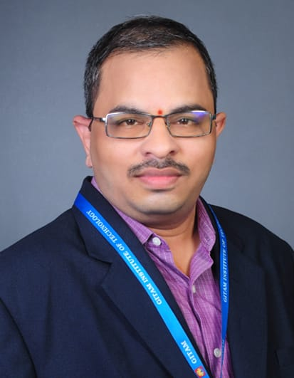

Andukuri Ravindra
Senior Technician, Department of Mechanical Engineering, GITAM School of Core Engineering, Visakhapatnam.
Research-oriented mechanical engineering professional with experience in CAD/CAM, simulation, intelligent manufacturing, decision-making systems, industrial consultancy and scholarly publishing.

Professional Focus
A clean academic and technical portfolio for showcasing research publications, intellectual property, books, monographs, consultancy works, and technical engineering capabilities.
Research Publications
Intelligent machining, fuzzy MCDM, condition monitoring, materials, manufacturing and decision support.
Patents & Innovation
AI-enabled engineering design, neuro-fuzzy decision-making, predictive maintenance and thermal energy systems.
Consultancy Works
CAD modelling, ANSYS structural analysis, engineering reports and technical presentation support for industry projects.